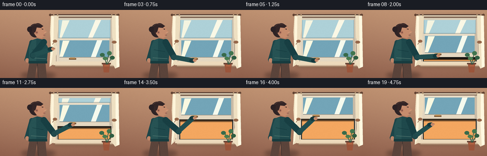
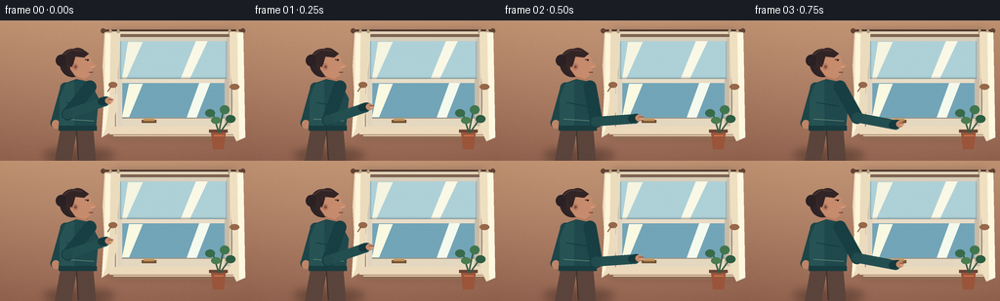

CODING AGENTS AS PIXEL WORLD MODELS
traex/GPT-5.6-Sol · motion_rationality_0042
点击播放 · 原生 RGB 像素
逐轮保存的候选
回放视频、检查图与代码变化。
每份候选均可单独播放。实际图片检查记录在下方工具轨迹中。
候选 01播放与检查图
点击播放 · 原生 RGB 像素

展开代码变化
--- 上一保存版本
+++ 本次保存版本
@@ -0,0 +1,266 @@
+from pathlib import Path
+import math
+import numpy as np
+from PIL import Image, ImageDraw, ImageFilter
+import artifact_io
+
+W,H,N = 256,144,20
+S=4
+rng=np.random.default_rng(42)
+
+def ease(x):
+ x=max(0,min(1,x)); return x*x*(3-2*x)
+def P(p): return tuple(int(round(v*S)) for v in p)
+def box(b): return tuple(int(round(v*S)) for v in b)
+def rect(d,b,fill,outline=None,width=1): d.rectangle(box(b),fill=fill,outline=outline,width=max(1,int(width*S)))
+def ell(d,b,fill,outline=None,width=1): d.ellipse(box(b),fill=fill,outline=outline,width=max(1,int(width*S)))
+def poly(d,pts,fill,outline=None): d.polygon([P(p) for p in pts],fill=fill); outline and d.line([P(p) for p in pts+[pts[0]]],fill=outline,width=S)
+def line(d,pts,fill,width=1,joint='curve'): d.line([P(p) for p in pts],fill=fill,width=max(1,int(width*S)),joint=joint)
+
+def rounded_line(d,a,b,color,width):
+ line(d,[a,b],color,width)
+ r=width/2
+ ell(d,(a[0]-r,a[1]-r,a[0]+r,a[1]+r),color)
+ ell(d,(b[0]-r,b[1]-r,b[0]+r,b[1]+r),color)
+
+def shadow(base, shapes, blur=4, alpha=90):
+ layer=Image.new('RGBA',base.size,(0,0,0,0)); sd=ImageDraw.Draw(layer)
+ for typ,args in shapes:
+ if typ=='rect': sd.rectangle(box(args),fill=(32,24,26,alpha))
+ elif typ=='ellipse': sd.ellipse(box(args),fill=(32,24,26,alpha))
+ elif typ=='poly': sd.polygon([P(p) for p in args],fill=(32,24,26,alpha))
+ base.alpha_composite(layer.filter(ImageFilter.GaussianBlur(blur*S)))
+
+def ik_elbow(shoulder, hand, l1=36, l2=44):
+ sx,sy=shoulder; hx,hy=hand
+ dx,dy=hx-sx,hy-sy; dist=max(1,math.hypot(dx,dy))
+ # Clamp geometrically but preserve hand endpoint.
+ dc=min(dist,l1+l2-0.01)
+ ux,uy=dx/dist,dy/dist
+ a=(l1*l1-l2*l2+dc*dc)/(2*dc)
+ hh=math.sqrt(max(0,l1*l1-a*a))
+ # clockwise perpendicular points toward lower side for this composition
+ return (sx+a*ux-hh*uy, sy+a*uy+hh*ux)
+
+def make_background():
+ h,w=H*S,W*S
+ y=np.arange(h)[:,None]
+ x=np.arange(w)[None,:]
+ # warm plaster wall, subtle vignette and paper-like grain
+ top=np.array([196,151,119.],float); bot=np.array([151,104,84.],float)
+ q=y/(h-1)
+ arr=top[None,None,:]*(1-q[:,:,None])+bot[None,None,:]*q[:,:,None]
+ arr=np.broadcast_to(arr,(h,w,3)).copy()
+ vign=((x-w*.48)/(w*.75))**2 + ((y-h*.46)/(h*.9))**2
+ arr-=10*vign[:,:,None]
+ noise=rng.normal(0,1.6,(h,w,1))
+ arr=np.clip(arr+noise,0,255).astype(np.uint8)
+ return Image.fromarray(arr,'RGB').convert('RGBA')
+
+BG=make_background()
+
+def draw_city(base):
+ d=ImageDraw.Draw(base,'RGBA')
+ # exterior opening base: dusk gradient
+ for yy in range(20*S,109*S):
+ t=(yy/S-20)/89
+ c=(int(105-35*t),int(155-48*t),int(184-48*t),255)
+ d.line([(122*S,yy),(233*S,yy)],fill=c,width=1)
+ # distant sunset stripe
+ rect(d,(122,77,233,109),(208,150,105,255))
+ for yy in range(77*S,109*S):
+ t=(yy/S-77)/32
+ c=(int(205-50*t),int(148-43*t),int(107-30*t),255)
+ d.line([(122*S,yy),(233*S,yy)],fill=c,width=1)
+ # far clouds
+ ell(d,(130,31,176,38),(228,218,194,30)); ell(d,(160,43,221,49),(232,221,200,24))
+ # skyline silhouettes and lit windows
+ buildings=[(123,86,138,109,(57,72,82,255)),(140,78,155,109,(65,74,82,255)),
+ (157,89,176,109,(52,65,72,255)),(178,70,192,109,(59,68,76,255)),
+ (194,82,211,109,(48,61,70,255)),(213,74,232,109,(55,67,73,255))]
+ for idx,(x0,y0,x1,y1,c) in enumerate(buildings):
+ rect(d,(x0,y0,x1,y1),c)
+ if idx in (1,3,5): rect(d,(x0+5,y0-5,x0+7,y0),(55,64,70,255))
+ for wy in np.arange(y0+7,y1-3,8):
+ for wx in np.arange(x0+4,x1-2,6):
+ if (int(wx+wy)+idx)%3:
+ rect(d,(wx,wy,wx+1.5,wy+2),(242,190,105,135))
+ # far roofline / sill reflection
+ line(d,[(122,108),(233,108)],(34,44,48,220),1)
+
+def draw_window(base, sash_y, open_amt, frame_i):
+ d=ImageDraw.Draw(base,'RGBA')
+ # deep cast shadow of whole frame
+ shadow(base,[('rect',(114,11,241,118))],blur=5,alpha=75)
+ d=ImageDraw.Draw(base,'RGBA')
+ # outer wooden casing
+ rect(d,(114,11,241,118),(229,214,188,255))
+ rect(d,(117,14,238,115),(126,100,82,255))
+ rect(d,(120,18,235,112),(42,56,61,255))
+ draw_city(base)
+ d=ImageDraw.Draw(base,'RGBA')
+ # upper fixed glass pane with cool glaze
+ rect(d,(123,20,232,62),(122,171,190,64))
+ rect(d,(124,21,231,61),(174,209,216,28))
+ # reflection streaks upper pane
+ poly(d,[(131,22),(146,22),(129,60),(125,60)],(245,245,225,25))
+ poly(d,[(201,20),(213,20),(193,62),(184,62)],(250,248,230,20))
+ # upper sash divider and thin rails
+ rect(d,(120,17,235,21),(217,206,185,255))
+ rect(d,(120,60,235,65),(214,202,181,255))
+ rect(d,(120,18,123,111),(212,199,177,255))
+ rect(d,(232,18,235,111),(205,192,172,255))
+ # open lower aperture gains a crisp dark inner edge
+ oy=sash_y+48
+ if open_amt>0.01:
+ rect(d,(121,oy,234,111),(36,43,43,int(125*open_amt)))
+ # restore visible city in opening after inner-edge overlay by a subtle translucent warmth
+ rect(d,(123,oy+1,232,108),(244,167,96,int(10*open_amt)))
+ # moving lower sash, in front of fixed sash when lifted
+ sy=sash_y
+ # sash soft shadow below
+ sh=Image.new('RGBA',base.size,(0,0,0,0)); sd=ImageDraw.Draw(sh,'RGBA')
+ sd.rectangle(box((121,sy+2,234,sy+51)),fill=(20,24,25,70))
+ base.alpha_composite(sh.filter(ImageFilter.GaussianBlur(2*S)))
+ d=ImageDraw.Draw(base,'RGBA')
+ rect(d,(120,sy,235,sy+49),(218,206,185,255))
+ rect(d,(124,sy+4,231,sy+40),(115,165,184,76))
+ # glass is transparent; only tint/reflections are painted
+ poly(d,[(132,sy+5),(146,sy+5),(132,sy+39),(125,sy+39)],(250,249,226,34))
+ poly(d,[(204,sy+4),(215,sy+4),(201,sy+40),(191,sy+40)],(245,250,238,24))
+ rect(d,(120,sy,235,sy+4),(233,221,199,255))
+ rect(d,(120,sy+40,235,sy+49),(229,216,193,255))
+ rect(d,(120,sy,125,sy+48),(226,213,191,255))
+ rect(d,(230,sy,235,sy+48),(201,187,166,255))
+ # bevels and lift handle at lower rail
+ line(d,[(125,sy+40),(230,sy+40)],(158,144,128,220),1)
+ handle_y=sy+44
+ rect(d,(145,handle_y-2,160,handle_y+1),(115,82,53,255))
+ rect(d,(147,handle_y-3,158,handle_y-1),(192,144,82,255))
+ # side tracks and sill, always in front
+ rect(d,(115,17,120,113),(236,222,198,255)); rect(d,(235,17,240,113),(224,209,185,255))
+ line(d,[(118,19),(118,110)],(151,130,111,190),1)
+ line(d,[(237,19),(237,110)],(145,124,106,180),1)
+ rect(d,(112,109,243,117),(237,218,188,255))
+ poly(d,[(112,117),(243,117),(238,122),(116,122)],(145,108,84,255))
+ line(d,[(116,118),(239,118)],(252,235,203,150),1)
+
+def draw_curtains(base, open_amt, frame_i):
+ d=ImageDraw.Draw(base,'RGBA')
+ # ceiling rod and rings
+ line(d,[(105,10),(248,10)],(80,57,47,255),2)
+ ell(d,(103,8,108,13),(98,67,50,255)); ell(d,(246,8,251,13),(98,67,50,255))
+ for xx in (113,121,235,243): ell(d,(xx-1.5,9,xx+1.5,14),(185,157,124,255))
+ # left tied curtain, slight inward flutter at hem once window opens
+ flutter=open_amt*(2.2*math.sin(frame_i*.8)+1.2*math.sin(frame_i*1.7))
+ pts=[(107,12),(123,13),(122,42),(118,66),(119+flutter*.25,91),(114+flutter,114),(104,120),(107,82),(105,47)]
+ poly(d,pts,(236,220,190,205))
+ poly(d,[(108,13),(113,14),(112,82),(108,111),(104,120),(107,70)],(255,245,218,60))
+ ell(d,(111,63,120,69),(151,104,75,220)); line(d,[(114,67),(110,73)],(132,89,64,220),1)
+ # right drape billows toward the open room (left)
+ sway=open_amt*(3.5+2*math.sin(frame_i*.7))
+ pts=[(235,12),(249,12),(251,120),(242,124),(236-sway,111),(239-sway*.45,83),(236-sway*.2,50)]
+ poly(d,pts,(239,224,194,215))
+ poly(d,[(243,13),(249,13),(251,120),(245,122),(244-sway*.3,78)],(255,248,224,58))
+ ell(d,(235,65,245,71),(151,104,75,210))
+
+def draw_plant(base, open_amt, frame_i):
+ d=ImageDraw.Draw(base,'RGBA')
+ # pot on sill/right foreground
+ rect(d,(214,112,233,115),(103,69,55,255))
+ poly(d,[(216,115),(231,115),(229,132),(218,132)],(155,85,59,255))
+ line(d,[(219,118),(229,118)],(217,128,82,160),1)
+ sway=open_amt*(2+1.3*math.sin(frame_i*.85))
+ stems=[((224,115),(218-sway,95)),((224,115),(229-sway*.4,91)),((225,115),(235-sway,101))]
+ for a,b in stems:
+ line(d,[a,b],(53,91,67,255),1.5)
+ ell(d,(210-sway,91,220-sway,99),(57,107,75,255))
+ ell(d,(225-sway*.4,87,235-sway*.4,96),(66,118,79,255))
+ ell(d,(231-sway,97,241-sway,105),(47,94,66,255))
+ ell(d,(216-sway*.5,99,226-sway*.5,106),(74,125,80,255))
+
+def draw_person(base, hand, sash_y, release=0):
+ d=ImageDraw.Draw(base,'RGBA')
+ # grounded soft cast shadow
+ sh=Image.new('RGBA',base.size,(0,0,0,0)); sd=ImageDraw.Draw(sh,'RGBA')
+ sd.ellipse(box((44,131,117,145)),fill=(38,24,23,90))
+ base.alpha_composite(sh.filter(ImageFilter.GaussianBlur(4*S)))
+ d=ImageDraw.Draw(base,'RGBA')
+ # legs/pants, partly cropped by frame
+ poly(d,[(63,105),(95,105),(98,144),(81,144),(78,116),(73,144),(56,144)],(91,68,59,255))
+ line(d,[(78,113),(80,143)],(54,46,44,130),1)
+ # back arm relaxed at side
+ rounded_line(d,(67,69),(57,105),(30,70,73,255),11)
+ ell(d,(53,102,61,111),(191,133,104,255))
+ # neck
+ poly(d,[(75,54),(89,54),(91,69),(76,68)],(183,123,96,255))
+ # torso sweater silhouette
+ poly(d,[(67,64),(78,60),(92,63),(101,80),(98,111),(60,111),(61,79)],(31,73,76,255))
+ # fabric light and folds
+ poly(d,[(67,65),(76,62),(76,110),(61,110),(61,80)],(39,83,84,255))
+ line(d,[(68,84),(91,88)],(18,56,60,130),1)
+ line(d,[(65,101),(96,103)],(94,129,120,90),1)
+ rect(d,(60,108,99,113),(24,60,63,255))
+ # reaching arm: draw after torso, with articulated elbow
+ shoulder=(92,68)
+ elbow=ik_elbow(shoulder,hand,36,44)
+ # small shoulder shadow then two sleeve segments
+ rounded_line(d,shoulder,elbow,(24,63,67,255),13)
+ rounded_line(d,elbow,(hand[0]-4,hand[1]+1),(35,79,80,255),10)
+ ell(d,(elbow[0]-5.2,elbow[1]-5.2,elbow[0]+5.2,elbow[1]+5.2),(33,75,77,255))
+ # cuff and gripping hand, aligned to the horizontal lift handle
+ rounded_line(d,(hand[0]-7,hand[1]+1),(hand[0]-2,hand[1]),(21,57,61,255),8)
+ ell(d,(hand[0]-3.5,hand[1]-3.2,hand[0]+4,hand[1]+3.7),(197,139,108,255))
+ line(d,[(hand[0],hand[1]-1),(hand[0]+5,hand[1]-1)],(152,95,74,255),1.2)
+ line(d,[(hand[0]+1,hand[1]+1),(hand[0]+5,hand[1]+1)],(225,168,132,255),1)
+ # head, ear, profile facing the window
+ # hair mass behind face and bun
+ ell(d,(61,29,87,58),(47,36,38,255))
+ ell(d,(57,35,68,47),(43,33,36,255))
+ ell(d,(68,28,91,57),(58,41,40,255))
+ # face shape and nose profile
+ poly(d,[(73,32),(87,33),(93,38),(94,43),(99,46),(94,49),(92,56),(87,60),(77,57),(72,50)],(198,140,109,255))
+ # hair fringe and ear
+ poly(d,[(69,31),(84,29),(91,34),(86,38),(77,37),(74,48),(69,45)],(51,37,38,255))
+ ell(d,(74,44,80,51),(183,121,96,255)); ell(d,(76,46,78.5,49),(121,77,68,180))
+ # eye, brow, nose highlight, mouth
+ line(d,[(87,40),(91,40)],(77,51,48,255),1)
+ ell(d,(89,40,90.5,41.5),(30,30,29,255))
+ line(d,[(93,48),(97,47)],(226,170,134,180),1)
+ line(d,[(91,53),(95,53)],(122,65,66,230),1)
+ # hair highlights
+ line(d,[(65,35),(72,30),(84,31)],(82,56,50,150),1)
+
+
+def render(i):
+ base=BG.copy()
+ # Determine action. Reach during first second, grip, lift smoothly, then release.
+ if i<=3:
+ r=ease(i/3)
+ hand=(111+(153-111)*r,82+(106-82)*r)
+ lift=0.0
+ elif i<=5:
+ hand=(153,106); lift=0.0
+ elif i<=15:
+ lift=ease((i-5)/10)
+ hand=(153,106-44*lift)
+ else:
+ lift=1.0
+ # hand lets go and lowers slightly after sash is fully open
+ rr=ease((i-15)/4)
+ hand=(153-12*rr,62+15*rr)
+ sash_y=60-44*lift
+ draw_window(base,sash_y,lift,i)
+ # Curtains sit between frame and person; person remains the foreground subject.
+ draw_curtains(base,lift,i)
+ draw_plant(base,lift,i)
+ draw_person(base,hand,sash_y, max(0,(i-15)/4))
+ # cinematic warm foreground edge and tiny static grain
+ arr=np.asarray(base.convert('RGB').resize((W,H),Image.Resampling.LANCZOS)).astype(np.int16)
+ small_noise=rng.normal(0,0.45,arr.shape[:2])[:,:,None]
+ arr=np.clip(arr+small_noise,0,255).astype(np.uint8)
+ return arr
+
+frames=np.stack([render(i) for i in range(N)],axis=0)
+artifact_io.save(frames,Path(__file__).resolve().parent)
+print('saved',frames.shape,frames.dtype)
可观测工具轨迹
实际执行的命令与返回图片。
命令 1exit 0
/bin/bash -lc "cat prompt.txt && printf '\\n---RULES---\\n' && cat GENERATION_RULES.md && printf '\\n---SPEC---\\n' && cat task_spec.json"
命令 2exit 0
/bin/bash -lc "find . -maxdepth 2 -type f -printf '%p\\n' | sort"
命令 3exit 0
/bin/bash -lc 'cat artifact_io.py'
命令 4exit 0
/bin/bash -lc "cat > generate.py <<'PY'
from pathlib import Path
import math
import numpy as np
from PIL import Image, ImageDraw, ImageFilter
import artifact_io
W,H,N = 256,144,20
S=4
rng=np.random.default_rng(42)
def ease(x):
x=max(0,min(1,x)); return x*x*(3-2*x)
def P(p): return tuple(int(round(v*S)) for v in p)
def box(b): return tuple(int(round(v*S)) for v in b)
def rect(d,b,fill,outline=None,width=1): d.rectangle(box(b),fill=fill,outline=outline,width=max(1,int(width*S)))
def ell(d,b,fill,outline=None,width=1): d.ellipse(box(b),fill=fill,outline=outline,width=max(1,int(width*S)))
def poly(d,pts,fill,outline=None): d.polygon([P(p) for p in pts],fill=fill); outline and d.line([P(p) for p in pts+[pts[0]]],fill=outline,width=S)
def line(d,pts,fill,width=1,joint='curve'): d.line([P(p) for p in pts],fill=fill,width=max(1,int(width*S)),joint=joint)
def rounded_line(d,a,b,color,width):
line(d,[a,b],color,width)
r=width/2
ell(d,(a[0]-r,a[1]-r,a[0]+r,a[1]+r),color)
ell(d,(b[0]-r,b[1]-r,b[0]+r,b[1]+r),color)
def shadow(base, shapes, blur=4, alpha=90):
layer=Image.new('RGBA',base.size,(0,0,0,0)); sd=ImageDraw.Draw(layer)
for typ,args in shapes:
if typ=='rect': sd.rectangle(box(args),fill=(32,24,26,alpha))
elif typ=='ellipse': sd.ellipse(box(args),fill=(32,24,26,alpha))
elif typ=='poly': sd.polygon([P(p) for p in args],fill=(32,24,26,alpha))
base.alpha_composite(layer.filter(ImageFilter.GaussianBlur(blur*S)))
def ik_elbow(shoulder, hand, l1=36, l2=44):
sx,sy=shoulder; hx,hy=hand
dx,dy=hx-sx,hy-sy; dist=max(1,math.hypot(dx,dy))
# Clamp geometrically but preserve hand endpoint.
dc=min(dist,l1+l2-0.01)
ux,uy=dx/dist,dy/dist
a=(l1*l1-l2*l2+dc*dc)/(2*dc)
hh=math.sqrt(max(0,l1*l1-a*a))
# clockwise perpendicular points toward lower side for this composition
return (sx+a*ux-hh*uy, sy+a*uy+hh*ux)
def make_background():
h,w=H*S,W*S
y=np.arange(h)[:,None]
x=np.arange(w)[None,:]
# warm plaster wall, subtle vignette and paper-like grain
top=np.array([196,151,119.],float); bot=np.array([151,104,84.],float)
q=y/(h-1)
arr=top[None,None,:]*(1-q[:,:,None])+bot[None,None,:]*q[:,:,None]
arr=np.broadcast_to(arr,(h,w,3)).copy()
vign=((x-w*.48)/(w*.75))**2 + ((y-h*.46)/(h*.9))**2
arr-=10*vign[:,:,None]
noise=rng.normal(0,1.6,(h,w,1))
arr=np.clip(arr+noise,0,255).astype(np.uint8)
return Image.fromarray(arr,'RGB').convert('RGBA')
BG=make_background()
def draw_city(base):
d=ImageDraw.Draw(base,'RGBA')
# exterior opening base: dusk gradient
for yy in range(20*S,109*S):
t=(yy/S-20)/89
c=(int(105-35*t),int(155-48*t),int(184-48*t),255)
d.line([(122*S,yy),(233*S,yy)],fill=c,width=1)
# distant sunset stripe
rect(d,(122,77,233,109),(208,150,105,255))
for yy in range(77*S,109*S):
t=(yy/S-77)/32
c=(int(205-50*t),int(148-43*t),int(107-30*t),255)
d.line([(122*S,yy),(233*S,yy)],fill=c,width=1)
# far clouds
ell(d,(130,31,176,38),(228,218,194,30)); ell(d,(160,43,221,49),(232,221,200,24))
# skyline silhouettes and lit windows
buildings=[(123,86,138,109,(57,72,82,255)),(140,78,155,109,(65,74,82,255)),
(157,89,176,109,(52,65,72,255)),(178,70,192,109,(59,68,76,255)),
(194,82,211,109,(48,61,70,255)),(213,74,232,109,(55,67,73,255))]
for idx,(x0,y0,x1,y1,c) in enumerate(buildings):
rect(d,(x0,y0,x1,y1),c)
if idx in (1,3,5): rect(d,(x0+5,y0-5,x0+7,y0),(55,64,70,255))
for wy in np.arange(y0+7,y1-3,8):
for wx in np.arange(x0+4,x1-2,6):
if (int(wx+wy)+idx)%3:
rect(d,(wx,wy,wx+1.5,wy+2),(242,190,105,135))
# far roofline / sill reflection
line(d,[(122,108),(233,108)],(34,44,48,220),1)
def draw_window(base, sash_y, open_amt, frame_i):
d=ImageDraw.Draw(base,'RGBA')
# deep cast shadow of whole frame
shadow(base,[('rect',(114,11,241,118))],blur=5,alpha=75)
d=ImageDraw.Draw(base,'RGBA')
# outer wooden casing
rect(d,(114,11,241,118),(229,214,188,255))
rect(d,(117,14,238,115),(126,100,82,255))
rect(d,(120,18,235,112),(42,56,61,255))
draw_city(base)
d=ImageDraw.Draw(base,'RGBA')
# upper fixed glass pane with cool glaze
rect(d,(123,20,232,62),(122,171,190,64))
rect(d,(124,21,231,61),(174,209,216,28))
# reflection streaks upper pane
poly(d,[(131,22),(146,22),(129,60),(125,60)],(245,245,225,25))
poly(d,[(201,20),(213,20),(193,62),(184,62)],(250,248,230,20))
# upper sash divider and thin rails
rect(d,(120,17,235,21),(217,206,185,255))
rect(d,(120,60,235,65),(214,202,181,255))
rect(d,(120,18,123,111),(212,199,177,255))
rect(d,(232,18,235,111),(205,192,172,255))
# open lower aperture gains a crisp dark inner edge
oy=sash_y+48
if open_amt>0.01:
rect(d,(121,oy,234,111),(36,43,43,int(125*open_amt)))
# restore visible city in opening after inner-edge overlay by a subtle translucent warmth
rect(d,(123,oy+1,232,108),(244,167,96,int(10*open_amt)))
# moving lower sash, in front of fixed sash when lifted
sy=sash_y
# sash soft shadow below
sh=Image.new('RGBA',base.size,(0,0,0,0)); sd=ImageDraw.Draw(sh,'RGBA')
sd.rectangle(box((121,sy+2,234,sy+51)),fill=(20,24,25,70))
base.alpha_composite(sh.filter(ImageFilter.GaussianBlur(2*S)))
d=ImageDraw.Draw(base,'RGBA')
rect(d,(120,sy,235,sy+49),(218,206,185,255))
rect(d,(124,sy+4,231,sy+40),(115,165,184,76))
# glass is transparent; only tint/reflections are painted
poly(d,[(132,sy+5),(146,sy+5),(132,sy+39),(125,sy+39)],(250,249,226,34))
poly(d,[(204,sy+4),(215,sy+4),(201,sy+40),(191,sy+40)],(245,250,238,24))
rect(d,(120,sy,235,sy+4),(233,221,199,255))
rect(d,(120,sy+40,235,sy+49),(229,216,193,255))
rect(d,(120,sy,125,sy+48),(226,213,191,255))
rect(d,(230,sy,235,sy+48),(201,187,166,255))
# bevels and lift handle at lower rail
line(d,[(125,sy+40),(230,sy+40)],(158,144,128,220),1)
handle_y=sy+44
rect(d,(145,handle_y-2,160,handle_y+1),(115,82,53,255))
rect(d,(147,handle_y-3,158,handle_y-1),(192,144,82,255))
# side tracks and sill, always in front
rect(d,(115,17,120,113),(236,222,198,255)); rect(d,(235,17,240,113),(224,209,185,255))
line(d,[(118,19),(118,110)],(151,130,111,190),1)
line(d,[(237,19),(237,110)],(145,124,106,180),1)
rect(d,(112,109,243,117),(237,218,188,255))
poly(d,[(112,117),(243,117),(238,122),(116,122)],(145,108,84,255))
line(d,[(116,118),(239,118)],(252,235,203,150),1)
def draw_curtains(base, open_amt, frame_i):
d=ImageDraw.Draw(base,'RGBA')
# ceiling rod and rings
line(d,[(105,10),(248,10)],(80,57,47,255),2)
ell(d,(103,8,108,13),(98,67,50,255)); ell(d,(246,8,251,13),(98,67,50,255))
for xx in (113,121,235,243): ell(d,(xx-1.5,9,xx+1.5,14),(185,157,124,255))
# left tied curtain, slight inward flutter at hem once window opens
flutter=open_amt*(2.2*math.sin(frame_i*.8)+1.2*math.sin(frame_i*1.7))
pts=[(107,12),(123,13),(122,42),(118,66),(119+flutter*.25,91),(114+flutter,114),(104,120),(107,82),(105,47)]
poly(d,pts,(236,220,190,205))
poly(d,[(108,13),(113,14),(112,82),(108,111),(104,120),(107,70)],(255,245,218,60))
ell(d,(111,63,120,69),(151,104,75,220)); line(d,[(114,67),(110,73)],(132,89,64,220),1)
# right drape billows toward the open room (left)
sway=open_amt*(3.5+2*math.sin(frame_i*.7))
pts=[(235,12),(249,12),(251,120),(242,124),(236-sway,111),(239-sway*.45,83),(236-sway*.2,50)]
poly(d,pts,(239,224,194,215))
poly(d,[(243,13),(249,13),(251,120),(245,122),(244-sway*.3,78)],(255,248,224,58))
ell(d,(235,65,245,71),(151,104,75,210))
def draw_plant(base, open_amt, frame_i):
d=ImageDraw.Draw(base,'RGBA')
# pot on sill/right foreground
rect(d,(214,112,233,115),(103,69,55,255))
poly(d,[(216,115),(231,115),(229,132),(218,132)],(155,85,59,255))
line(d,[(219,118),(229,118)],(217,128,82,160),1)
sway=open_amt*(2+1.3*math.sin(frame_i*.85))
stems=[((224,115),(218-sway,95)),((224,115),(229-sway*.4,91)),((225,115),(235-sway,101))]
for a,b in stems:
line(d,[a,b],(53,91,67,255),1.5)
ell(d,(210-sway,91,220-sway,99),(57,107,75,255))
ell(d,(225-sway*.4,87,235-sway*.4,96),(66,118,79,255))
ell(d,(231-sway,97,241-sway,105),(47,94,66,255))
ell(d,(216-sway*.5,99,226-sway*.5,106),(74,125,80,255))
def draw_person(base, hand, sash_y, release=0):
d=ImageDraw.Draw(base,'RGBA')
# grounded soft cast shadow
sh=Image.new('RGBA',base.size,(0,0,0,0)); sd=ImageDraw.Draw(sh,'RGBA')
sd.ellipse(box((44,131,117,145)),fill=(38,24,23,90))
base.alpha_composite(sh.filter(ImageFilter.GaussianBlur(4*S)))
d=ImageDraw.Draw(base,'RGBA')
# legs/pants, partly cropped by frame
poly(d,[(63,105),(95,105),(98,144),(81,144),(78,116),(73,144),(56,144)],(91,68,59,255))
line(d,[(78,113),(80,143)],(54,46,44,130),1)
# back arm relaxed at side
rounded_line(d,(67,69),(57,105),(30,70,73,255),11)
ell(d,(53,102,61,111),(191,133,104,255))
# neck
poly(d,[(75,54),(89,54),(91,69),(76,68)],(183,123,96,255))
# torso sweater silhouette
poly(d,[(67,64),(78,60),(92,63),(101,80),(98,111),(60,111),(61,79)],(31,73,76,255))
# fabric light and folds
poly(d,[(67,65),(76,62),(76,110),(61,110),(61,80)],(39,83,84,255))
line(d,[(68,84),(91,88)],(18,56,60,130),1)
line(d,[(65,101),(96,103)],(94,129,120,90),1)
rect(d,(60,108,99,113),(24,60,63,255))
# reaching arm: draw after torso, with articulated elbow
shoulder=(92,68)
elbow=ik_elbow(shoulder,hand,36,44)
# small shoulder shadow then two sleeve segments
rounded_line(d,shoulder,elbow,(24,63,67,255),13)
rounded_line(d,elbow,(hand[0]-4,hand[1]+1),(35,79,80,255),10)
ell(d,(elbow[0]-5.2,elbow[1]-5.2,elbow[0]+5.2,elbow[1]+5.2),(33,75,77,255))
# cuff and gripping hand, aligned to the horizontal lift handle
rounded_line(d,(hand[0]-7,hand[1]+1),(hand[0]-2,hand[1]),(21,57,61,255),8)
ell(d,(hand[0]-3.5,hand[1]-3.2,hand[0]+4,hand[1]+3.7),(197,139,108,255))
line(d,[(hand[0],hand[1]-1),(hand[0]+5,hand[1]-1)],(152,95,74,255),1.2)
line(d,[(hand[0]+1,hand[1]+1),(hand[0]+5,hand[1]+1)],(225,168,132,255),1)
# head, ear, profile facing the window
# hair mass behind face and bun
ell(d,(61,29,87,58),(47,36,38,255))
ell(d,(57,35,68,47),(43,33,36,255))
ell(d,(68,28,91,57),(58,41,40,255))
# face shape and nose profile
poly(d,[(73,32),(87,33),(93,38),(94,43),(99,46),(94,49),(92,56),(87,60),(77,57),(72,50)],(198,140,109,255))
# hair fringe and ear
poly(d,[(69,31),(84,29),(91,34),(86,38),(77,37),(74,48),(69,45)],(51,37,38,255))
ell(d,(74,44,80,51),(183,121,96,255)); ell(d,(76,46,78.5,49),(121,77,68,180))
# eye, brow, nose highlight, mouth
line(d,[(87,40),(91,40)],(77,51,48,255),1)
ell(d,(89,40,90.5,41.5),(30,30,29,255))
line(d,[(93,48),(97,47)],(226,170,134,180),1)
line(d,[(91,53),(95,53)],(122,65,66,230),1)
# hair highlights
line(d,[(65,35),(72,30),(84,31)],(82,56,50,150),1)
def render(i):
base=BG.copy()
# Determine action. Reach during first second, grip, lift smoothly, then release.
if i<=3:
r=ease(i/3)
hand=(111+(153-111)*r,82+(106-82)*r)
lift=0.0
elif i<=5:
hand=(153,106); lift=0.0
elif i<=15:
lift=ease((i-5)/10)
hand=(153,106-44*lift)
else:
lift=1.0
# hand lets go and lowers slightly after sash is fully open
rr=ease((i-15)/4)
hand=(153-12*rr,62+15*rr)
sash_y=60-44*lift
draw_window(base,sash_y,lift,i)
# Curtains sit between frame and person; person remains the foreground subject.
draw_curtains(base,lift,i)
draw_plant(base,lift,i)
draw_person(base,hand,sash_y, max(0,(i-15)/4))
# cinematic warm foreground edge and tiny static grain
arr=np.asarray(base.convert('RGB').resize((W,H),Image.Resampling.LANCZOS)).astype(np.int16)
small_noise=rng.normal(0,0.45,arr.shape[:2])[:,:,None]
arr=np.clip(arr+small_noise,0,255).astype(np.uint8)
return arr
frames=np.stack([render(i) for i in range(N)],axis=0)
artifact_io.save(frames,Path(__file__).resolve().parent)
print('saved',frames.shape,frames.dtype)
PY
python generate.py"命令 5exit 0
/bin/bash -lc "python - <<'PY'
import numpy as np
from PIL import Image
z=np.load('pixels.npz')['pixels']
print('pixels',z.shape,z.dtype,'frames',len(list(__import__('pathlib').Path('frames').glob('*.png'))))
# inter-frame difference statistics
f=[]
for i in range(20): f.append(np.asarray(Image.open(f'frames/{i:02d}.png')).astype(int))
f=np.stack(f)
print('MAD consecutive:',np.round(np.abs(np.diff(f,axis=0)).mean((1,2,3)),2).tolist())
print('artifacts:',[(p.name,p.stat().st_size) for p in __import__('pathlib').Path('.').glob('*') if p.is_file()])
PY"视觉工具实际返回图片 1

视觉工具实际返回图片 2

保存候选 1 份；完成命令 5 次；可验证图片返回 2 张。原始 API 响应与完整日志保留在本地。